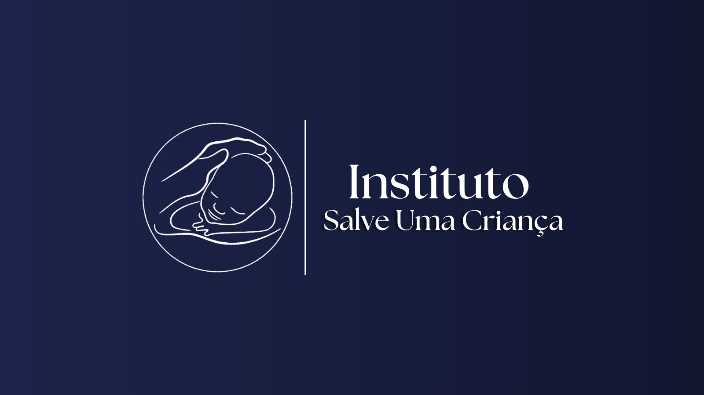
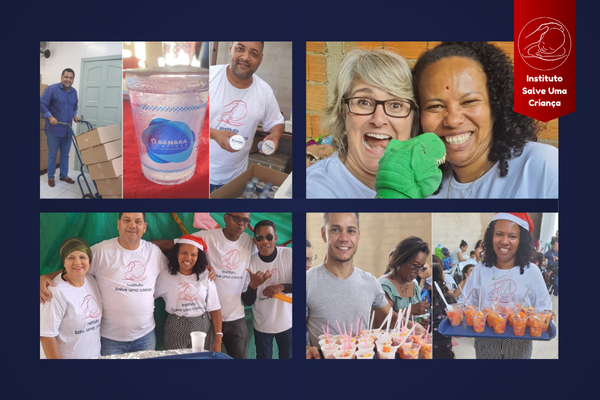

O Instituto "Salve uma Criança" foi fundado em Campinas pelo capelão Clodoaldo Andrade, com a missão de transformar a vida de crianças em situação de vulnerabilidade.
Desde o início, nosso compromisso tem sido oferecer suporte essencial para garantir que cada criança tenha a oportunidade de crescer com dignidade e esperança.
Com dedicação e amor, temos impactado inúmeras vidas, promovendo educação, saúde e bem-estar para um futuro mais justo.

Ao longo dos anos, expandimos nossas iniciativas, estabelecendo parcerias com escolas, profissionais de saúde e voluntários comprometidos com a causa.
Nosso objetivo é criar uma rede de apoio que possa atender não apenas as necessidades imediatas das crianças,
mas também oferecer ferramentas para que elas construam um futuro brilhante e cheio de possibilidades.